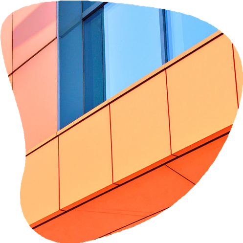

Il y a un an, j’ai eu une révélation : trop de petites entreprises, pleines de valeurs fortes et d’histoires uniques, n’arrivaient pas à faire passer leur message. Faute de temps, d’outils ou de compétences, leurs voix restaient trop souvent dans l’ombre.
C’est pour elles qu’est né LEMAO.
Un nom clin d’œil à mon histoire personnelle et à ma mission : transmettre, avec sincérité et créativité, ce que chaque projet a de plus précieux.
Chez LEMAO, l’humain est au centre de tout.
Ce qui m’anime, c’est le contact, l’échange, et surtout cette envie profonde de donner une voix à ceux qui en manquent. Raconter des histoires vraies, transmettre des valeurs, mettre en lumière des initiatives locales et authentiques… voilà ce qui me fait vibrer.
Ici, chaque projet est unique.
On prend le temps de se connaître, de comprendre votre univers, puis on construit ensemble une communication qui vous ressemble vraiment.
[n.m] origine breton
Incarne la joie et le dénouement, symbole de l’authenticité de celui qui sert avec cœur.